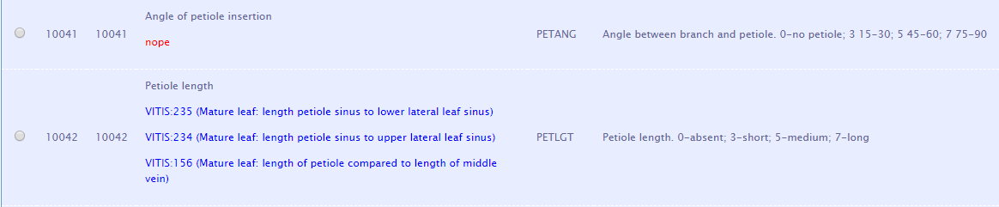

BigDataGrapes WP3 Status. Montpellier.
2018-07-18
1 Achievements
1.1 Scope and Meetings
- WP3 Data & Semantics Layer is a core WP of the project
- If we have no data, we can have no achievements
- Between 30 Apr and 16 July, ONTO hosted 6 project meetings
- Currently working on T3.1 Data Modelling over Big Data Infrastructures (ONTO, AGRO, AUA, INRA)
- After we figure out a semantic data model, we should start on T3.2 Data Ingestion and Integration
- In parallel (and very soon!), we should start on T3.3 Big Data Indexing (also CNR)
- Participants (most active listed first):
- ONTO: Vladimir
- AGRO: Antonis, Pythagoras
- AUA: Katerini
- INRA: Sabine-Karen, Danai?
- Occasional: CNR, Geocledian, Apigea
1.2 Semantic Data Integration Steps
- data analysis
- defining data requirements (competence questions)
- ontology engineering: selection, combination and extension of ontologies
- (we are somewhere here)
- semantic modeling and creating application profiles and/or RDF shapes (SHACL, ShEx)
- semantic conversion and tools, depending on source (CSV/TSV tabular, RDBMS, XML)
- semantic alignment and instance matching
- URL design, semantic publishing, content negotiation
- data validation and data quality management/measurement
- data update flows
- model documentation, sample queries, deploying queries as services
1.3 Minutes and Resources
- gfolder WP3
- gdoc WP3-meeting-minutes has: minutes, background from DOW, links to resources, detailed material
- When some material gets bigger, we split it off to a separate file
- Github repo: https://github.com/BigDataGrapes-EU/ontology (first WP in the project)
- data: semantic data (for now, some samples)
- ttl: relevant ontologies converted to turtle (and added prefixes) for easier reading
- misc: ontology materials in miscellaneous formats (eg xlsx, obo)
- notes: various notes on ontologies and data.
- Mirroring between gfolder and Github, bad idea, must decide Github or Google Drive
1.4 Ontologies Researched
- AGRO submitted sheet Relevant Ontologies and Vocabularies: 16 relevant ontologies, plus 21 on specific crops to use as examples
- ONTO downloaded 17 ontologies, converted to ttl which is easier to read
- ONTO researched them to some extent and wrote up various problems (see next)
- ONTO also researched several ontology portals, with a total of 200 ontologies, 5M classes (!), 16k props, 476k individuals
1.5 Ontology List
- AEO (OAE): Agricultural Experiments Ontology
- AFEO: Agri-Food Experiment Ontology
- AGRO: Agronomy Ontology
- AT: Agricultural Technology Ontology
- BCO: Biological Collection Ontology
- BFO: Basic Formal Ontology
- ChEBI: Chemical Entities of Biological Interest
- CO: Crop Ontology (series of)
- CO_320: Rice
- CO_322: Maize
- CO_356: Vitis (viticulture)
- CO_357: Woody Plant
- CO_UO: Units Ontology
- EO (ENVO): Environment Ontology
- IAO: Information Artifact Ontology
- MMO: Measurement Methods Ontology
- NCBITaxon: NCBI Taxonomy
- OBO: Open Biological and Biomedical Ontology (a big set)
- OEPO: Ontology for Experimental Phenotypic Objects
- OFPE: Ontology for Food Processing Experiment
- PATO: Phenotypic Quality Ontology
- PCO: Population and Community Ontology
- PECO: Plant and Environemental Conditions Ontology
- PO: Plant Ontology
- RO: Relations Ontology
- SDGIO: SDG-Interface Ontology
- TO: Trait Ontology
- UO: Unit Ontology
1.6 Ontology Metrics
| Classes | Properties | Individuals | |
|---|---|---|---|
| AEO | 56 | 36 | 30 |
| AFEO | 68 | 8 | 0 |
| AGRO | 1685 | 709 | 284 |
| BCO | 157 | 279 | 28 |
| BFO | 35 | 20 | |
| CHEBI | 128900 | 45 | |
| CO_356 | 814 | 10 | |
| ENVO | 8510 | 241 | 21 |
| FOODON | 27050 | 130 | 359 |
| IAO | 219 | 111 | 23 |
| NCBITaxon | 1692930 | 27 | |
| … | … | … | … |
| TOTAL | 1874943 | 3598 | 1467 |
1.7 Ontology Portals
Useful to search for terms, see total size, inspiration for our own tools
- OBOfoundry: list of ontologies, with resource links
- CropOntology: collaborative ontology development
- CO Annotation: annotate tabular data with terms
- Planteome: PO, TO, EO. Tree browser, graph vis
- EBI OLS: 200 ontologies eg agro, Crop Ontologies, Tree browser, graph vis, useful search eg NDVI
- EBI OXO: Ontology Xref Service: serves ontology mappings, will integrate to OLS in 2018
- GODAN VEST: AgriSemantics Map of Data Standards: 398 ontologies, 215 Food and agriculture, 76 from AgroPortal, 328 from VEST Registry. Eg AEO
- OntoBee: eg PO, AGRO. Detailed Statis, eg PO
- ABER OWL: eg AGRO. Simpler browsing
1.8 AUA Tabular Data
- Look at data in WP8/Table Grapes Pilot- AUA/Data
- Look in D8.1 Piloting Plan (specifically BigDataGrapes_Piloting Plan-AUA) for descriptions of equipment and measured indicators
- Tabular observation data: soil, plant canopies, spectral vegetation indexes
- 3 estates: Fasoulis, Kontogiannis, Palivou (see Photos for some images)
- Equipment: EM38, RapidScan, SpectroSense, Crop Circle
- Geo-referenced: longitude, latitude, altitude; timestamped
- About 10 measurements per measurement spot
Represents realistic measurement data - Currently working out a semantic representation to use as etalon for other data
1.9 Data Handling Needs
- To tie measurements to a specific plot: localization of geo-coordinates within the plot (GeoSPARQL predicate
within) - Discretization (then Averaging) to correlate measurements from different equipment and different days:
- Of Geo-coordinates (eg to a grid of 2x2m), then
- Of Datetime (eg is it ok to correlate two measurements done within a day? How about within a week?)
- Data cleaning: discard defective or outlier measurements
- Eg1: RapidScan needs some “warm up” time to establish a GPS connection. Discard:
- Readings with “FIXTYPE: Fix not valid” (missing)
- Readings with negative ELEVATION (invalid)
- Eg2: EM38 is affected by metal pillars, so conductivity readings above 100 should be discarded.
- Eg on Fasoulis_Kato_EM38_map, only the green readings should be retained.
- Eg1: RapidScan needs some “warm up” time to establish a GPS connection. Discard:
- Matches Use case A. Data Anomaly Detection & Classification.
- Eg Eca sensing: Georeferenced soil electrical conductivity data; Operations: Data filtering for outliers

1.10 INRA RDF Data
- INRA submitted two batches, ONTO provided detailed feedback and error reports
data3, data4: simple observations. INRA data is top 4 nodes, rest is from Vitis
1.11 INRA RDF Data 3, 4 Feedback
Feedback ontology/notes#INRA Samples
- Wrong URL http://www.cropontology.org/ontology/CO_356/Vitis#1000215, should be http://www.cropontology.org/rdf/CO_356:1000215
"2016-09-09T00:00:00.0000000Z"^^xsd:datepads with fake time 0, uses invalid datatype (should bexsd:dateTimeStamp)- Observations eg http://vinnotec.supagro.inra.fr/public/Pr/data/observation1 are missing
rdf:type - Observation objects eg http://vinnotec.supagro.inra.fr/public/Pr/2016_SUNAGRI_L1_2_C01_Grappe are not defined in these files
1.12 INRA RDF Data 5
- Plot geometry using GeoSPARQL (
geo:asWKT) - Observations on harvest, fermentation, maturity, must, total sugars (BRIX refractometry)
INRA_Variables.ttldefines extra terms (maybe they belong in Vitis?)
Fedback README.org and HTML rendered
- Detailed feedback provided on 7 files, still need to check 5 files
- About 30 TODO reported, must turn all of them into DONE

1.13 Data Handling and Validation
data-validation-handling. Started rules on:
- How to submit files (must decide Github or gdrive)
- How to use and update
prefixes.ttl - How to validate syntax using
riot(and maybeeyeball) - Once we decide on patterns for representing data, we will implement RDF Shapes for validating data requirements
Hope this will grow to a comprehensive doc on semantic data handling and validation by BDG project partners
1.14 Competence Questions
Competence Questions - What data you have - What data needs you have, or what questions the data should be able to answer
Given the abundance of available data and the sea of agro-bio ontologies, data needs are crucial to keep the modeling effort focused, and drive these tasks:
- Seeking more data for specific questions
- Deciding which ontologies to involve and whether more ontological work is needed
- Structuring the data in an appropriate form (semantic modeling)
- Defining data tasks: conversion, cleanup/filtering, discretization…
- Creating sample queries to help data consumers
We need real, validated competence questions to drive our work
1.15 AGRO Competence Questions
Submitted draft Competence Questions:
- Can I retrieve the sub-plots for a given plot?
- Which varieties are cultivated in a given plot?
- Can I retrieve weather data for a given plot?
- Which varieties are cultivated in a soil with certain characteristics?
- Can I retrieve the origin locale for a given test sample?
- Can I retrieve images of a plot from which a sample was taken
- Can I retrieve historical yield results for a plot (providing a timestamp)?
- Can I retrieve historical weather data for a plot (providing a timestamp)?
Next steps
- ONTO started elaborating
- AGRO needs to add more details, down detalis such as
- Are geolocation qualifiers (satellite, quality, HDOP) needed?
- All partners must validate questions and ground them in (derive them from) Use Cases
1.16 Data Domains
What data we need to represent?
- Observations: when (timestamp), where (georeference), what (measure, dimension, attribute, and observation)
- Estates and plots, including geospatial data
- Measurement equipment
- Experiments?
- Static nomenclature data, eg: varieties, types of measurement…
- Photos… of what?
- What else??
2 Ontology Notes
2.1 Ontology Problems
Github ontology/notes, rendered HTML
- Numerous prefix problems. Collected master file prefixes.ttl, let’s use it
- Ontology namespace and ontology file differ significantly, no semantic resolution
- Some ontologies use wrong namespace (URLs don’t mesh), eg Vitis uses
rdfs:subProperty(it’srdfs:subPropertyOf) - CO_357/nt is invalid, because someone was too lazy to put in new lines
- Various terms with unfilled labels, eg
CO_356:0000309“name: No method name found” - Viis Mismatch: is
CO_356:1000215measured in grams (name “SBER_W_g”) or milligrams (relation toCO_356:4000018“mg”) - Classes, properties and even some ontology files use numeric codes not English names
- Makes it necessary to implement some search/browse interface to use them efectively
- Even
rdfs:labeloften uses unreadable abbreviations- Eg
CO_322:0001093“EWid_M_mm” means Ear width, measurement, in mm - Eg
CO_320:0000824“PanLng_MatAv_UPOV1to3” means rice panicle length, mature - average, UPOV scale, 1..3
- Eg
- Slash in local names make invalid prefixed names, eg
CO_322:0000320/2is value 3=“21-30% dead leaf area” ofCO_322:0000320“0-10 Senescence scale” - Space in URL is bad practice, eg
rice:Biotic%20stress: - Many terms declared both
skos:Concept, owl:NamedIndividual, owl:Classand connected by bothrdfs:subClassOfandskos:broaderTransitive.- represents heavy punning and makes OWL inference impossible
2.2 Over-Commitment
In many cases terms are defined at the wrong level of abstraction
- Eg NDVI is defined only in Maize, so it can’t be used for grapes (Vitis)
- Do we repeat the same mistake in Vitis, or try to move this to the Crop Ontology?
- Eg
CO_UOdefines “grams” relative to some woody plant feature. This is crazy because a gram is a gram, no matter what it’s used to measure. So this unit cannot be used for grapes.
CO_UO:0000021 rdfs:label "g"@en; CO:scale_of CO_357:2000105.
CO_357:2000105 rdfs:label "Ratio shoot root protocol"@en It’s better to use a proper Units ontology like QUDT, which defines units in terms of fundamentals (Mass, Length, Time, etc) and conversion factors between units
Namespace hijacking: redefining imported (external) terms
2.3 Ontology Problems: Conclusion
Property naming convention (lowerCamelCase) not followed, eg
po:Tomato rdfs:subPropertyOf oboInOwl:SubsetPropertyImproperly formatted timestamps, eg
"Jul 28, 2013 6:56:15 AM"^^xsd:dateTimeWrong URL https://www.w3.org/TR/xmlschema-2/#rf-maxInclusive (in some text), should be http://www.w3.org/2001/XMLSchema#maxInclusive (semantic)
Mixup of properties and URLs into a string, eg
General conclusions
- Seems to me there’s very little quality control in AgroBio ontologies
- Maybe a lot of these 200 ontologies and 5M terms are created just to do research, not used in real data
- Engage with the AgroBio community to fix some of the problems
3 WP3 Problems and Steps
3.1 Not Enough Traction
As you can see on slide “Semantic Data Integration Steps”, we’re still in the beginning. Reasons:
- No effective leadership by AGRO to collect competence questions and liaise with the AgroBio community
- Irregular meeting attendance: only one meeting was attended by all 4 organizations
- Little progress between meetings
- Feedback (error reports) provided by ONTO received no reaction
- No collaboration in Github yet (hopefully soon)
3.2 Immediate Next Steps
- AGRO: take the lead on validated Competence Questions
- ONTO & AGRO & INRA: establish Ontology Working Group: fixed responsibilities, regular meetings, progress between meetings
- AGRO & INRA: establish collaboration process with the AgroBio community (see 20180623 Modeling Quality): have direct contacts to the persons behind these ontologies (and/or the relevant curation teams)
- INRA & ONTO: map AUA tabular data to ontologies
3.3 Short-Term Plans
DONE
- Research ontologies sent by partners and other related ontologies (AGRO, INRA)
IN-PROGRESS
- Get competence questions (AGRO, all partners)
- Get sample tabular data from partners (AUA, others)
- Get sample RDF data from partners (INRA)
- Report ontology and instance data errors to partners
TODO
- Report ontology errors to AgroBio community and engage to fix them
- Discuss how to represent various Data Domains with partners
- Create a semantic model with rdfpuml
- Create text narrative (see euBusinessGraph Semantic Model as an example)
- Get the model approved
4 Long-Term Plans
4.1 Long-Term Plans
- Create RDF shapes for the approved model (SHACL and/or ShEx), establish validation
- Research and specify possible tools (conversion, annotation, search)
- Select or implement/deploy tools
- Implement special data processing (eg cleaning, discretization)
- Establish data ingestion pipeline
- Load data to GraphDB
- Implement sample queries
4.2 Possible Tool: GDB OntoRefine
OntoRefine: part of GDB Workbench, easy cleaning and conversion of tabular data.
4.3 Possible Tool: CO Term Annotation
Eg CO Annotation: annotate tabular data with terms
Shows that many terms are not found, and ambiguity of terms between ontologies (over-specification)
4.4 Possible Tool: ELI SHACL Validator
European Legislation Identifier Validator

4.5 Possible Extensions/Integrations
- Create library of shapes (SHACL or ShEx) for validation, with visualization
- Add library of data shapes (SPARQL CONSTRUCT) to OntoRefine
- Integrate shape validation to OntoRefine
Etc etc etc. But we first need specifications!